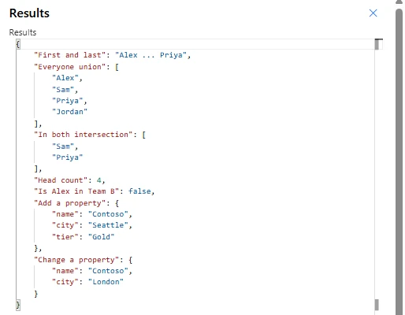

- Power Automate
- Level 2 · Working with data · 3 of 7
Arrays and objects: first, last, union, intersection
Lists (arrays) and records (objects) are everywhere in flows: rows from a table, people in a team, fields of an item. A small set of functions answers most questions about them without a loop.
The demo inputs
WhatFunctions that pick, combine, count and change lists and records.
WhyThey replace loops for everyday questions: who's in both teams, how many, is X in the list.
DemoTwo teams and one customer record.
Two lists and one record
Team A
"Alex""Sam""Priya"
Team B
"Sam""Jordan""Priya"
Customer
{"name":"Contoso","city":"Seattle"}
List functions
Each function on the demo lists
| Expression | Result | Answers |
|---|---|---|
first(Team A) / last(Team A) | "Alex""Priya" | first / last item |
union(Team A, Team B) | AlexSamPriyaJordan | everyone, no duplicates |
intersection(Team A, Team B) | SamPriya | who's in both |
length(union(…)) | 4 | how many |
contains(Team B, 'Alex') | false | is it in the list? |
take(Team A, 2) / skip(Team A, 1) | AlexSam / SamPriya | first n / all after n |
outputs('Team_A')[0] | "Alex" | item by position (from 0) |

Tip:
union(list, list) with the same list twice removes duplicates from one list.Object functions
Functions return a new record; the original doesn't change
{"name":"Contoso","city":"Seattle"}
addProperty(…, 'tier', 'Gold')
{…,"tier":"Gold"}
setProperty(…, 'city', 'London')
{…,"city":"London"}
removeProperty(…, 'city')
{"name":"Contoso"}
addProperty(outputs('Customer'), 'tier', 'Gold')| Piece | What it does |
|---|---|
outputs('Customer') | The record to start from. |
'tier', 'Gold' | The new field and its value. |
Sorting, reversing and unique IDs
![Text_and_arrays output: Request ID from subject 1042, Filled template Hello Alex, request REQ-1042 is ready., uriComponent Contoso%20%26%20Co, guid() a random ID, sort [1, 2, 3], reverse [3, 2, 1]](../assets/img/pa/ext-text-arrays.webp)
| Expression | Result | Use it for |
|---|---|---|
sort(createArray(3, 1, 2)) | [1, 2, 3] | Order values. For objects give the property: sort(list, 'Title'). |
reverse(…) | [3, 2, 1] | Newest first, after a sort by date |
guid() | a new random ID | A batch ID every row in one run can be traced to |
Watch out
- Positions start at 0:
[0]is the first item. first()of an empty list is null. Guard withempty()orcoalesce().- Functions never edit in place. Save the result in a Compose or Set variable.
New to this? Start from the basics optional
Array: an ordered list in [ ].
Object: named fields in { }.
Common mistakes
- Looping to check whether a value is in a list. Use
contains(). - Expecting
addPropertyto change the original record. - Using
addPropertyon a field that exists (it fails). UsesetProperty.